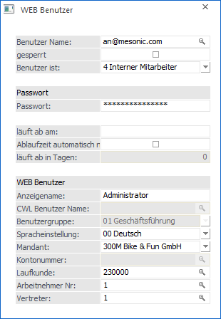
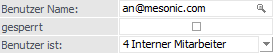
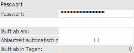
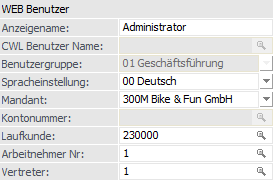
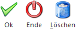

Im Menüpunkt…
1 Benutzer
1 WEB Benutzer
… können die Benutzer verwaltet werden, welche Zugriff auf die WinLine WEB Edition haben.

Dabei können zwei Unterscheidungen getroffen werden:
ü Interne Benutzer
Das sind
Benutzer, die in der WinLine angelegt werden. Hier kann definiert werden,
welchen Status der Benutzer hat.
ü Externe Benutzer
Das sind
Benutzer, die sich über das Internet selbst registrieren, um einen Zugriff z.B.
auf einen Warenkorb zu erhalten.
Benutzer

Ø Benutzer Name
Hier wird der Benutzername eingetragen, wobei als Name die Mailadresse verwendet wird. Durch Drücken der F9-Taste kann nach allen bereits angelegten Benutzern gesucht werden.
Ø gesperrt
Ist diese Checkbox aktiviert, dann kann sich dieser Benutzer nicht mehr in der WinLine bzw. der WEB Edition anmelden.
Hinweis
Diese Checkbox wird automatisch aktiviert, wenn der Benutzer 3 Mal ein falsches Passwort beim Einstieg in die WinLine bzw. WEB Edition eingegeben hat. Erst wenn die Checkbox von einem Administrator wieder deaktiviert wird, kann sich der Benutzer wieder anmelden.
Ø Benutzer ist
Aus der Auswahlbox kann der Typ des Benutzers gewählt werden:
ü 1 - Interessent
Der Benutzer
hat über das Internet eine Erstanmeldung durchgeführt und keine Kundennummer
angegeben - damit wird der Benutzer automatisch als Interessent geführt - auch
wenn er bereits eine Bestellung in Auftrag gegeben hat.
ü 2 - Debitor
Der Benutzer ist
gleichzeitig ein Kunde und kann somit einem Personenkonto der WinLine zugeordnet
werden. Ist dies der Fall, dann kann im Feld "Kontonummer" die entsprechende
Kundennummer eingetragen werden.
ü 3 - CWL-Benutzer
Mit dieser
Einstellung ist der WEB Edition Benutzer gleichzeitig ein WinLine Benutzer. In
diesem Fall kann im Feld "CWL Benutzer Name" der WinLine Benutzer hinterlegt
werden.
ü 4 - Interner Mitarbeiter
Der
Benutzer ist gleichzeitig ein Arbeitnehmer oder ein Vertreter und somit auch in
der WinLine angelegt. AN oder Vertreter können zusätzliche Programmteile in der
WEB Edition benutzen (sofern die entsprechenden Lizenzen vorhanden sind) als
Interessenten oder Debitoren.
ü 5 - Smart Benutzer
Ein
SMART-Benutzer ist ein Benutzer, der in der WEB Edition auf eigens definierte
Datenbereiche zugreifen kann (wobei hier nur Auswertungen möglich sind). Dabei
ist der Benutzer online, hat also immer alle aktuellen Daten zur Verfügung.
Hinweis
SMART-Benutzer können nur so viele angelegt werden, wie entsprechend viele SMART-Benutzer-Lizenzen vorhanden sind.
CWLWEB-Benutzer können entsprechend der vorhandenen CWL-Benutzerlizenzen angelegt werden.
Passwort

Ø Passwort
Eingabe eines Passwortes (Achtung auf Klein/Großschreibung, bei der Eingabe werden nur Platzhalter = Sterne angezeigt). Nach Bestätigen der Eingabe muss das Passwort durch eine zweite Abfrage bestätigt werden um Tippfehler auszuschließen.
Ø läuft ab am
Hier kann das Ablaufdatum des Passworts eingegeben werden. Meldet sich der Benutzer an diesem Tag (oder danach) an, dann muss er das Passwort ändern. Wird das aktuelle Datum eingetragen, muss der Benutzer bei der nächsten Anmeldung ein neues Passwort vergeben.
Ø Ablaufzeit automatisch nach Neueingabe wieder setzen
Ist diese Checkbox aktiviert, dann kann in dem Feld "läuft ab in Tagen" die Anzahl der Tage eingegeben werden, nach denen das Passwort jeweils geändert werden muss.
Ø läuft ab in Tagen
Ist die Option "Ablaufzeit automatisch nach Neueingabe wieder setzen" aktiviert worden, so kann in diesem Feld die Anzahl der Tage vergeben werden, nach denen das Passwort jeweils geändert werden muss.
WEB Benutzer

Ø Anzeigename
Hier kann der Name des Benutzers eingegeben werden, der im WEB angezeigt werden soll. Bleibt dieses Feld leer, so fällt das Programm auf den jeweiligen Stammsatz zurück. D.h. handelt es sich bei dem WEB Benutzer um z.B. einen Vertreter (Hinterlegung einer Vertreternummer) und wird dieses Feld leer gelassen, so wird im WEB der Name des Vertreters angezeigt. Gleiches gilt natürlich z.B. auch beim Arbeitnehmer.
Bei WEB Benutzern, welche auf einen WinLine Benutzer verweisen, wird jener Name im WEB angezeigt, der beim WinLine Benutzer hinterlegt ist.
Ø CWL Benutzer Name
Dieses Feld kann nur dann bearbeitet werden, wenn im Feld "Benutzer ist" die Option CWL-Benutzer gewählt wurde. In diesem Fall wird hier der WinLine -Benutzername eingetragen. Durch Drücken der F9-Taste kann nach allen angelegten Benutzern gesucht werden.
Ø Spracheinstellung
Aus der Auswahlbox kann die Sprache gewählt werden, in der der Benutzer die Internetseiten betrachten bzw. bearbeiten soll. Wenn sich der Benutzer selbst angelegt hat (über Erstanmeldung), dann wird die Sprache verwendet, welcher der Benutzer beim Surfen verwendet hat.
Ø Mandant
Aus der Auswahlbox kann der Mandant gewählt werden, mit dem der Benutzer arbeiten darf.
Ø Kontonummer
Wenn es sich um einen Debitor handelt, kann hier die entsprechende Kontonummer aus dem Personenkontenstamm hinterlegt werden.
Ø Laufkunde
Ø Arbeitnehmer Nr.
Wenn der Benutzer mit der Option "Interner Mitarbeiter" angelegt wurde, kann hier die Arbeitnehmernummer aus dem WinLine LOHN eingetragen werden.
Ø Vertreter
Wenn der Benutzer mit der Option "Interner Mitarbeiter" angelegt wurde, kann hier die Vertreternummer aus der WinLine FAKT eingetragen werden. Durch Drücken der F9-Taste kann nach allen Vertretern gesucht werden.
Buttons

Ø Ok
Durch Anklicken des Buttons "Ok" bzw. der Taste F5 wird der Benutzer gespeichert.
Ø Ende
Durch Drücken des Buttons "Ende" bzw. der Taste ESC wird das Fenster geschlossen und alle nicht gespeicherten Eingaben verworfen.
Ø Löschen
Durch Anwahl des Buttons "Löschen" wird der aktive Benutzer gelöscht.